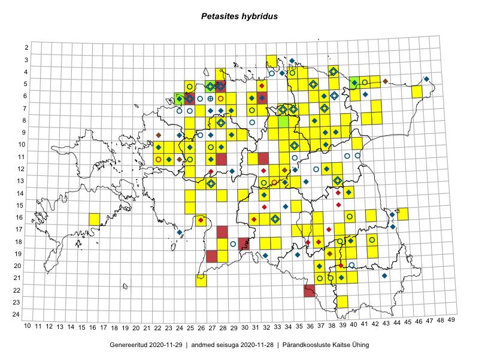

Petasites hybridus
Uuendatud: 2016-12-07
Kaardile koondatud taksonid: Petasites hybridus (L.) P.Gaertn., B.Mey. & Scherb.

Kaart põhineb 221 kirjel, neist vaatlusi 219 ja eksemplare 2. Taksonit on leitud 109 ruudust.
| Ruut | Vaatleja(d) | Vaatlusaeg | Kirje tüüp | Viide andmebaasikirjele |
|---|---|---|---|---|
| 05-41 | Thea Kull | 2015-04-25 | ruut/ala | vaata PlutoFis |
| Malle Leht | 2015-05-16 | ruut/ala | vaata PlutoFis | |
| Malle Leht | 2015-07-09 | ruut/ala | vaata PlutoFis | |
| 16-37 | Peedu Saar, Meeli Mesipuu | 2015-05-05 | punkt | vaata PlutoFis |
| 07-35 | Peedu Saar, Timo Luhamäe | 2015-05-12 | ruut/ala | vaata PlutoFis |
| 07-35 | Peedu Saar, Timo Luhamäe | 2015-05-12 | punkt | vaata PlutoFis |
| 07-36 | Peedu Saar, Timo Luhamäe | 2015-05-12 | ruut/ala | vaata PlutoFis |
| 07-36 | Peedu Saar, Timo Luhamäe | 2015-05-12 | punkt | vaata PlutoFis |
| Malle Leht | 2015-08-02 | ruut/ala | vaata PlutoFis | |
| 13-27 | Toomas Kukk, Indrek Tammekänd | 2015-05-09 | punkt | vaata PlutoFis |
| 13-27 | Toomas Kukk, Indrek Tammekänd | 2015-05-09 | punkt | vaata PlutoFis |
| 16-42 | Peedu Saar | 2015-05-01 | ruut/ala | vaata PlutoFis |
| 16-42 | Peedu Saar | 2015-05-01 | punkt | vaata PlutoFis |
| 03-33 | Rein Kalamees, Kersti Püssa | 2015-08-04 | ruut/ala | vaata PlutoFis |
| 13-27 | Toomas Kukk, Indrek Tammekänd | 2015-05-09 | punkt | vaata PlutoFis |
| 13-34 | Toomas Kukk, Indrek Tammekänd | 2015-05-10 | ruut/ala | vaata PlutoFis |
| 13-34 | Toomas Kukk, Indrek Tammekänd | 2015-05-10 | punkt | vaata PlutoFis |
| 09-36 | Toomas Kukk, Raivo Kalle | 2015-05-11 | ruut/ala | vaata PlutoFis |
| 09-37 | Toomas Kukk, Raivo Kalle | 2015-05-11 | ruut/ala | vaata PlutoFis |
| 09-38 | Toomas Kukk, Raivo Kalle | 2015-05-11 | ruut/ala | vaata PlutoFis |
| 09-36 | Toomas Kukk, Raivo Kalle | 2015-05-11 | punkt | vaata PlutoFis |
| 09-37 | Toomas Kukk, Raivo Kalle | 2015-05-11 | punkt | vaata PlutoFis |
| 09-37 | Toomas Kukk, Raivo Kalle | 2015-05-11 | punkt | vaata PlutoFis |
| 09-38 | Toomas Kukk, Raivo Kalle | 2015-05-11 | punkt | vaata PlutoFis |
| 09-38 | Toomas Kukk, Raivo Kalle | 2015-05-11 | punkt | vaata PlutoFis |
| 10-35 | Peedu Saar, Ott Luuk | 2015-07-27 | ruut/ala | vaata PlutoFis |
| 10-34 | Peedu Saar, Liina Oja | 2015-06-08 | ruut/ala | vaata PlutoFis |
| 07-29 | Ott Luuk, Peedu Saar | 2015-09-04 | punkt | vaata PlutoFis |
| 06-41 | Toomas Kukk, Tiit Hallikma | 2015-07-24 | ruut/ala | vaata PlutoFis |
| 18-40 | Malle Leht | 2015-07-25 | ruut/ala | vaata PlutoFis |
| 16-45 | Toomas Kukk, Eerik Leibak | 2015-07-29 | punkt | vaata PlutoFis |
| 18-40 | Malle Leht | 2015-05-12 | ruut/ala | vaata PlutoFis |
| Malle Leht | 2015-07-08 | ruut/ala | vaata PlutoFis | |
| 12-34 | Toomas Kukk, Tiit Hallikma | 2015-06-12 | ruut/ala | vaata PlutoFis |
| 16-42 | Thea Kull, Eerik Leibak | 2015-07-05 | punkt | vaata PlutoFis |
| 16-42 | Thea Kull, Eerik Leibak | 2015-07-05 | ruut/ala | vaata PlutoFis |
| 11-31 | Ott Luuk, Toivo Sepp | 2015-07-12 | ruut/ala | vaata PlutoFis |
| 06-31 | Rein Kalamees, Kersti Püssa | 2015-06-01 | ruut/ala | vaata PlutoFis |
| 05-37 | Rein Kalamees, Kersti Püssa | 2015-05-29 | ruut/ala | vaata PlutoFis |
| 05-41 | Thea Kull, Peedu Saar | 2015-04-25 | punkt | vaata PlutoFis |
| 12-39 | Peedu Saar, Eerik Leibak | 2015-08-16 | punkt | vaata PlutoFis |
| 12-39 | Peedu Saar, Eerik Leibak | 2015-08-16 | ruut/ala | vaata PlutoFis |
| 05-35 | Rein Kalamees, Kersti Püssa | 2015-06-06 | ruut/ala | vaata PlutoFis |
| 06-41 | Tiit Hallikma, Toomas Kukk | 2015-07-24 | punkt | vaata PlutoFis |
| 12-34 | Tiit Hallikma, Toomas Kukk | 2015-06-12 | punkt | vaata PlutoFis |
| 05-37 | Rein Kalamees, Kersti Püssa | 2015-08-15 | ruut/ala | vaata PlutoFis |
| 05-35 | Rein Kalamees, Kersti Püssa | 2015-08-16 | ruut/ala | vaata PlutoFis |
| 04-35 | Rein Kalamees, Kersti Püssa | 2015-05-31 | ruut/ala | vaata PlutoFis |
| 04-36 | Rein Kalamees, Kersti Püssa | 2015-05-31 | ruut/ala | vaata PlutoFis |
| 05-32 | Rein Kalamees | 2015-04-25 | punkt | vaata PlutoFis |
| 09-35 | Thea Kull, Hannes Pehlak | 2015-05-15 | ruut/ala | vaata PlutoFis |
| 06-47 | Thea Kull, Peedu Saar | 2015-04-26 | ruut/ala | vaata PlutoFis |
| 11-31 | Ott Luuk, Toivo Sepp | 2015-07-12 | punkt | vaata PlutoFis |
| 08-43 | Thea Kull, Eerik Leibak | 2016-07-24 | ruut/ala | vaata PlutoFis |
| 07-34 | Jana-Maria Habicht, Ester Valdvee | 2015-08-15 | ruut/ala | vaata PlutoFis |
| 08-34 | Jana-Maria Habicht, Ester Valdvee | 2015-05-09 | ruut/ala | vaata PlutoFis |
| 08-34 | Jana-Maria Habicht, Ester Valdvee | 2015-05-10 | ruut/ala | vaata PlutoFis |
| 08-34 | Jana-Maria Habicht, Ester Valdvee | 2015-05-30 | ruut/ala | vaata PlutoFis |
| 08-34 | Jana-Maria Habicht, Ester Valdvee | 2015-07-31 | ruut/ala | vaata PlutoFis |
| 08-35 | Jana-Maria Habicht, Ester Valdvee, Kirke Pilvik | 2015-07-14 | ruut/ala | vaata PlutoFis |
| 09-33 | Jana-Maria Habicht, Ester Valdvee, Arto-Randel Servet | 2015-05-23 | ruut/ala | vaata PlutoFis |
| 09-34 | Jana-Maria Habicht, Ester Valdvee, Kirke Pilvik | 2015-07-25 | ruut/ala | vaata PlutoFis |
| 09-35 | Jana-Maria Habicht, Ester Valdvee, Tiiu Liimets | 2015-07-07 | ruut/ala | vaata PlutoFis |
| 09-35 | Jana-Maria Habicht, Ester Valdvee, Kirke Pilvik, Anu Nurk | 2015-07-30 | ruut/ala | vaata PlutoFis |
| 09-36 | Jana-Maria Habicht, Ester Valdvee | 2015-08-15 | ruut/ala | vaata PlutoFis |
| 11-31 | Ott Luuk, Toivo Sepp | 2015-05-18 | ruut/ala | vaata PlutoFis |
| 13-39 | Eeva-Maria Jeletsky, Tarmo Niitla | 2015-05-03 | ruut/ala | vaata PlutoFis |
| 11-31 | Ott Luuk, Toivo Sepp | 2015-05-18 | punkt | vaata PlutoFis |
| 09-30 | Ott Luuk, Toivo Sepp | 2015-04-26 | ruut/ala | vaata PlutoFis |
| 21-39 | Eeva-Maria Jeletsky, Tarmo Niitla | 2015-07-24 | ruut/ala | vaata PlutoFis |
| 14-32 | Maria Abakumova, Helle Mäemets | 2015-07-01 | ruut/ala | vaata PlutoFis |
| 12-38 | Ulvi Selgis | 2015-04-05 | punkt | vaata PlutoFis |
| 06-24 | Erkki Otsman, Sergei Smirnov | 2015-05-29 | ruut/ala | vaata PlutoFis |
| 16-33 | Maria Abakumova | 2015-06-30 | ruut/ala | vaata PlutoFis |
| 08-40 | Meeli Mesipuu, Maret Gerz | 2015-05-13 | ruut/ala | vaata PlutoFis |
| 08-37 | Meeli Mesipuu, Maret Gerz | 2015-05-13 | punkt | vaata PlutoFis |
| 21-38 | Eeva-Maria Jeletsky, Tarmo Niitla | 2015-08-12 | ruut/ala | vaata PlutoFis |
| 15-25 | Maret Gerz, Leena Gerz | 2015-08-08 | ruut/ala | vaata PlutoFis |
| 07-34 | Kai Rünk, Ülle Jõgar, Illi Tarmu | 2015-05-22T07:00Z | ruut/ala | vaata PlutoFis |
| 10-41 | Kai Rünk, Ülle Jõgar, Illi Tarmu | 2015-07-29T12:00Z | ruut/ala | vaata PlutoFis |
| 18-37 | Karin Kikas, Elle Rajandu | 2015-04-22 | ruut/ala | vaata PlutoFis |
| 18-37 | Karin Kikas, Elle Rajandu | 2015-04-22 | punkt | vaata PlutoFis |
| 18-33 | Maria Abakumova, Helle Mäemets | 2015-05-21 | ruut/ala | vaata PlutoFis |
| 13-35 | Toivo Sepp, Eerik Leibak | 2015-05-13 | punkt | vaata PlutoFis |
| 10-37 | Toivo Sepp, Eerik Leibak | 2015-05-11 | ruut/ala | vaata PlutoFis |
| 08-34 | Toivo Sepp, Eerik Leibak | 2015-05-12 | punkt | vaata PlutoFis |
| 19-42 | Kirsi Loide, Marje Loide | 2015-05-01T07:00Z | ruut/ala | vaata PlutoFis |
| 16-37 | Meeli Mesipuu, Peedu Saar | 2015-05-05 | ruut/ala | vaata PlutoFis |
| 05-43 | Liina Oja, Meeli Mesipuu | 2015-04-26 | punkt | vaata PlutoFis |
| 05-43 | Liina Oja, Meeli Mesipuu | 2015-04-26 | ruut/ala | vaata PlutoFis |
| 07-43 | Liina Oja, Meeli Mesipuu | 2015-04-27 | ruut/ala | vaata PlutoFis |
| 18-42 | Kirsi Loide, Marje Loide | 2015-07-28 | ruut/ala | vaata PlutoFis |
| 16-40 | Elle Rajandu | 2015-04-27 | punkt | vaata PlutoFis |
| 13-35 | Ott Luuk, Liina Oja | 2015-05-11 | ruut/ala | vaata PlutoFis |
| 14-40 | Karin Kikas, Elle Rajandu | 2015-04-20 | ruut/ala | vaata PlutoFis |
| 08-40 | Maret Gerz, Meeli Mesipuu | 2015-05-13 | punkt | vaata PlutoFis |
| 08-37 | Maret Gerz, Meeli Mesipuu | 2015-05-12 | ruut/ala | vaata PlutoFis |
| 08-38 | Maret Gerz, Meeli Mesipuu | 2015-05-12 | ruut/ala | vaata PlutoFis |
| 10-34 | Maret Gerz, Meeli Mesipuu | 2015-05-11 | ruut/ala | vaata PlutoFis |
| 11-34 | Maret Gerz, Meeli Mesipuu | 2015-05-11 | ruut/ala | vaata PlutoFis |
| 13-34 | Mari Metsoja, Jaak-Albert Metsoja | 2015-06-11 | ruut/ala | vaata PlutoFis |
| 08-37 | Karin Kikas, Elle Rajandu | 2015-06-14 | punkt | vaata PlutoFis |
| 20-37 | Kaili Kattai | 2015-05-26 | ruut/ala | vaata PlutoFis |
| 10-38 | Karin Kikas, Elle Rajandu | 2015-06-02 | ruut/ala | vaata PlutoFis |
| 05-25 | Mari Metsoja, Jaak-Albert Metsoja | 2015-07-30 | ruut/ala | vaata PlutoFis |
| 08-25 | Mari Metsoja, Jaak-Albert Metsoja | 2015-05-31 | ruut/ala | vaata PlutoFis |
| 17-36 | Helle Mäemets, Mare Leis | 2015-06-25 | ruut/ala | vaata PlutoFis |
| 05-42 | Kaili Orav, Silvia Pihu | 2015-06-18 | ruut/ala | vaata PlutoFis |
| 04-39 | Kaili Orav, Silvia Pihu | 2015-06-19 | ruut/ala | vaata PlutoFis |
| 13-35 | Ott Luuk, Liina Oja | 2015-05-11 | punkt | vaata PlutoFis |
| 16-31 | Ulvi Selgis | 2016-04-10 | punkt | vaata PlutoFis |
| 15-35 | Aat Sarv | 2015-05-22 | ruut/ala | vaata PlutoFis |
| 10-24 | Hanna-Eliisa Luts, Tõnu Ploompuu, Anna-Grete Rebane | 2015-07-19 | ruut/ala | vaata PlutoFis |
| 20-39 | Toomas Kukk, Eerik Leibak | 2016-04-25 | ruut/ala | vaata PlutoFis |
| 08-27 | Aat Sarv | 2015-07-23 | ruut/ala | vaata PlutoFis |
| 16-31 | Toomas Kukk, Eerik Leibak | 2016-04-28 | ruut/ala | vaata PlutoFis |
| 08-28 | Aat Sarv | 2015-05-10 | ruut/ala | vaata PlutoFis |
| 20-39 | Toomas Kukk, Eerik Leibak | 2016-04-25 | punkt | vaata PlutoFis |
| 10-27 | Aat Sarv | 2015-08-09 | ruut/ala | vaata PlutoFis |
| 14-32 | Indrek Tammekänd | 2015-04-19 | punkt | vaata PlutoFis |
| 21-37 | Ott Luuk, Tiit Hallikma | 2016-04-27 | ruut/ala | vaata PlutoFis |
| 16-31 | Toomas Kukk, Eerik Leibak | 2016-04-28 | punkt | vaata PlutoFis |
| 14-25 | Ott Luuk, Tiit Hallikma | 2016-04-29 | ruut/ala | vaata PlutoFis |
| 20-37 | Ott Luuk, Tiit Hallikma | 2016-04-25 | ruut/ala | vaata PlutoFis |
| 13-39 | Ulvi Selgis | 2016-05-07 | ruut/ala | vaata PlutoFis |
| 07-29 | Thea Kull, Meeli Mesipuu | 2016-05-13 | punkt | vaata PlutoFis |
| 10-22 | Tõnu Ploompuu | 2015-08-21 | ruut/ala | vaata PlutoFis |
| 04-39 | Ott Luuk, Tiit Hallikma | 2016-05-19 | ruut/ala | vaata PlutoFis |
| 05-39 | Ott Luuk, Tiit Hallikma | 2016-05-19 | ruut/ala | vaata PlutoFis |
| 11-25 | Ott Luuk, Tiit Hallikma | 2016-05-12 | ruut/ala | vaata PlutoFis |
| 08-42 | Eerik Leibak | 2016-05-13 | ruut/ala | vaata PlutoFis |
| 08-42 | Eerik Leibak | 2016-05-13 | punkt | vaata PlutoFis |
| 07-29 | Meeli Mesipuu, Thea Kull | 2016-05-13 | punkt | vaata PlutoFis |
| 06-28 | Tõnu Ploompuu | 2015-06-06 | ruut/ala | vaata PlutoFis |
| 09-29 | Ott Luuk, Thea Kull | 2016-05-30 | ruut/ala | vaata PlutoFis |
| 20-37 | Tiit Hallikma, Ott Luuk | 2016-04-27 | punkt | vaata PlutoFis |
| 11-25 | Tiit Hallikma, Ott Luuk | 2016-05-12 | punkt | vaata PlutoFis |
| 07-26 | Meeli Mesipuu, Thea Kull | 2016-06-03 | ruut/ala | vaata PlutoFis |
| 21-26 | Thea Kull, Peedu Saar | 2016-06-07 | ruut/ala | vaata PlutoFis |
| 10-22 | Tõnu Ploompuu | 2015-05-20 | ruut/ala | vaata PlutoFis |
| 10-23 | Sirje Lagle, Tõnu Ploompuu | 2015-05-15 | ruut/ala | vaata PlutoFis |
| 11-22 | Sirje Lagle, Tõnu Ploompuu | 2015-05-16 | ruut/ala | vaata PlutoFis |
| 11-27 | Andrus Jair, Tõnu Ploompuu | 2015-05-17 | ruut/ala | vaata PlutoFis |
| 16-40 | Kai Rünk, Ülle Jõgar, Illi Tarmu | 2016-06-14T11:00Z | ruut/ala | vaata PlutoFis |
| 18-40 | Toomas Kukk, Tiit Hallikma, Johannes Kõdar | 2016-06-13 | ruut/ala | vaata PlutoFis |
| 21-39 | Rein Kalamees, Eerik Leibak | 2016-06-17 | ruut/ala | vaata PlutoFis |
| 13-26 | Thea Kull | 2016-06-22 | ruut/ala | vaata PlutoFis |
| 18-40 | Tiit Hallikma, Toomas Kukk | 2016-06-13 | punkt | vaata PlutoFis |
| 06-24 | Thea Kull, Helle Mäemets | 2016-07-07 | ruut/ala | vaata PlutoFis |
| 09-25 | Thea Kull, Oliver Parrest | 2016-07-06 | ruut/ala | vaata PlutoFis |
| 05-25 | Toomas Kukk, Sander Laherand | 2016-07-05 | punkt | vaata PlutoFis |
| 14-28 | Thea Kull, Tiit Hallikma | 2016-07-08 | ruut/ala | vaata PlutoFis |
| 21-40 | Tarmo Niitla, Peedu Saar | 2016-06-17 | ruut/ala | vaata PlutoFis |
| 18-32 | Toomas Kukk, Hannes Pehlak | 2016-07-19 | ruut/ala | vaata PlutoFis |
| 14-32 | Toomas Kukk, Liina Oja | 2016-07-21 | ruut/ala | vaata PlutoFis |
| 10-34 | Mari Metsoja, Eerik Leibak | 2016-07-21 | ruut/ala | vaata PlutoFis |
| 10-34 | Mari Metsoja, Eerik Leibak | 2016-07-21 | punkt | vaata PlutoFis |
| 12-33 | Tõnu Ploompuu, Marko Veinbergs, Eerik Leibak | 2016-07-22 | ruut/ala | vaata PlutoFis |
| 09-35 | Ott Luuk, Eerik Leibak | 2016-07-25 | ruut/ala | vaata PlutoFis |
| 05-37 | Tõnu Ploompuu, Eerik Leibak | 2016-07-27 | ruut/ala | vaata PlutoFis |
| 05-37 | Tõnu Ploompuu, Eerik Leibak | 2016-07-27 | punkt | vaata PlutoFis |
| 07-38 | Liina Oja, Eerik Leibak | 2016-07-28 | ruut/ala | vaata PlutoFis |
| 07-35 | Sander Laherand, Toomas Kukk, Nele Jõessar | 2016-07-27 | punkt | vaata PlutoFis |
| 05-25 | Sander Laherand, Toomas Kukk | 2016-07-05 | ruut/ala | vaata PlutoFis |
| 10-35 | Toomas Kukk, Tiit Hallikma | 2016-07-25 | ruut/ala | vaata PlutoFis |
| 10-38 | Ott Luuk, Eerik Leibak | 2016-08-08 | ruut/ala | vaata PlutoFis |
| 09-38 | Ott Luuk, Eerik Leibak | 2016-08-08 | ruut/ala | vaata PlutoFis |
| 09-40 | Ott Luuk, Eerik Leibak | 2016-08-09 | ruut/ala | vaata PlutoFis |
| 09-39 | Ott Luuk, Eerik Leibak | 2016-08-09 | ruut/ala | vaata PlutoFis |
| 04-39 | Ott Luuk, Kersti Tambets, Ülle Jõgar, Janika Sammasto, Sten Mander | 2016-08-11 | ruut/ala | vaata PlutoFis |
| 11-23 | Aat Sarv, Maret Gerz | 2016-07-06 | ruut/ala | vaata PlutoFis |
| 07-38 | Liina Oja, Eerik Leibak | 2016-07-28 | punkt | vaata PlutoFis |
| 05-35 | Liina Oja, Peedu Saar, Susanna Vain | 2016-07-27 | punkt | vaata PlutoFis |
| 04-36 | Liina Oja, Meeli Mesipuu | 2016-07-26 | punkt | vaata PlutoFis |
| 09-36 | Liina Oja, Peedu Saar, Susanna Vain | 2016-07-25 | punkt | vaata PlutoFis |
| 15-35 | Liina Oja, Susanna Vain, Elle Rajandu | 2016-07-22 | punkt | vaata PlutoFis |
| 04-35 | Sander Laherand, Ott Luuk, Nele Jõessar | 2016-07-26 | ruut/ala | vaata PlutoFis |
| 13-34 | Timo Luhamäe, Meeli Mesipuu | 2016-07-22 | punkt | vaata PlutoFis |
| 07-35 | Karin Kikas, Elle Rajandu | 2016-06-29 | ruut/ala | vaata PlutoFis |
| 06-29 | Toomas Kukk, Sander Laherand | 2016-08-29 | punkt | vaata PlutoFis |
| 17-39 | Rein Kalamees, Kersti Püssa | 2016-07-21 | ruut/ala | vaata PlutoFis |
| 07-29 | Rein Kalamees, Sander Laherand | 2016-07-08 | ruut/ala | vaata PlutoFis |
| 10-25 | Sirje Azarov, Meeli Mesipuu | 2016-07-06 | ruut/ala | vaata PlutoFis |
| 15-35 | Liina Oja, Elle Rajandu, Susanna Vain | 2016-07-22 | punkt | vaata PlutoFis |
| 04-28 | Sander Laherand, Tõnu Ploompuu, Nele Jõessar | 2016-07-25 | ruut/ala | vaata PlutoFis |
| 14-32 | Liina Oja, Toomas Kukk | 2016-07-21 | punkt | vaata PlutoFis |
| 11-22 | Sirje Azarov, Oliver Parrest | 2016-07-07 | ruut/ala | vaata PlutoFis |
| 09-35 | Toomas Kukk, Tiit Hallikma | 2016-07-25 | punkt | vaata PlutoFis |
| 07-35 | Toomas Kukk, Sander Laherand, Nele Jõessar | 2016-07-27 | ruut/ala | vaata PlutoFis |
| 08-35 | Toomas Kukk, Sander Laherand, Nele Jõessar | 2016-07-27 | punkt | vaata PlutoFis |
| 06-31 | Toomas Kukk, Peedu Saar | 2016-09-08 | punkt | vaata PlutoFis |
| 13-27 | Timo Luhamäe, Peedu Saar | 2016-07-08 | punkt | vaata PlutoFis |
| 08-37 | Mari Reitalu, Triin Reitalu | 2016-07-12 | ruut/ala | vaata PlutoFis |
| 09-37 | Mari Reitalu, Triin Reitalu | 2016-07-11 | ruut/ala | vaata PlutoFis |
| 06-29 | Sander Laherand, Toomas Kukk | 2016-08-29 | ruut/ala | vaata PlutoFis |
| 08-33 | Peedu Saar, Toomas Kukk | 2016-09-15 | ruut/ala | vaata PlutoFis |
| 08-33 | Toomas Kukk, Peedu Saar | 2016-09-15 | punkt | vaata PlutoFis |
| 14-30 | Hannes Pehlak, Tõnu Ploompuu, Marko Veinbergs | 2016-07-21 | ruut/ala | vaata PlutoFis |
| 08-42 | Rein Kalamees, Kersti Püssa | 2016-06-07 | ruut/ala | vaata PlutoFis |
| 06-31 | Peedu Saar, Toomas Kukk | 2016-09-08 | ruut/ala | vaata PlutoFis |
| 07-32 | Peedu Saar, Ott Luuk | 2016-09-28 | ruut/ala | vaata PlutoFis |
| 09-36 | Peedu Saar, Liina Oja, Susanna Vain | 2016-07-25 | ruut/ala | vaata PlutoFis |
| 05-35 | Peedu Saar, Liina Oja, Susanna Vain | 2016-07-27 | ruut/ala | vaata PlutoFis |
| 11-31 | Peedu Saar, Toivo Sepp | 2016-07-22 | ruut/ala | vaata PlutoFis |
| 09-30 | Ott Luuk, Peedu Saar | 2016-09-06 | ruut/ala | vaata PlutoFis |
| 11-34 | Peedu Saar, Timo Luhamäe | 2016-07-21 | ruut/ala | vaata PlutoFis |
| 10-27 | Peedu Saar, Timo Luhamäe, Johannes Kõdar | 2016-07-06 | ruut/ala | vaata PlutoFis |
| 10-28 | Peedu Saar, Timo Luhamäe, Johannes Kõdar | 2016-07-06 | ruut/ala | vaata PlutoFis |
| 13-27 | Peedu Saar, Timo Luhamäe | 2016-07-08 | ruut/ala | vaata PlutoFis |
| 05-39 | Ott Luuk, Tiit Hallikma | 2016-07-28 | ruut/ala | vaata PlutoFis |
| 13-33 | Ott Luuk, Indrek Tammekänd | 2016-07-21 | ruut/ala | vaata PlutoFis |
| 12-25 | Meeli Mesipuu, Sirje Azarov | 2016-07-05 | ruut/ala | vaata PlutoFis |
| 17-35 | Meeli Mesipuu, Toivo Sepp, Susanna Vain | 2016-07-20 | ruut/ala | vaata PlutoFis |
| 13-34 | Meeli Mesipuu, Timo Luhamäe | 2016-07-22 | ruut/ala | vaata PlutoFis |
| 19-28 | Ott Luuk, Peedu Saar | 2016-06-09 | ruut/ala | vaata PlutoFis |
| 06-37 | Meeli Mesipuu, Tiit Hallikma | 2016-07-27 | ruut/ala | vaata PlutoFis |
| 04-36 | Meeli Mesipuu, Liina Oja | 2016-07-26 | ruut/ala | vaata PlutoFis |
| 06-38 | Hannes Pehlak, Thea Kull | 2016-07-25 | ruut/ala | vaata PlutoFis |
| 04-39 | Hannes Pehlak, Toomas Kukk, Susanna Vain | 2016-07-28 | ruut/ala | vaata PlutoFis |
| 05-41 | Peedu Saar, Thea Kull | 2015-04-25 | eksemplar | vaata PlutoFis |
| 08-34 | Jana-Maria Habicht | 2015-05-09 | eksemplar | vaata PlutoFis |